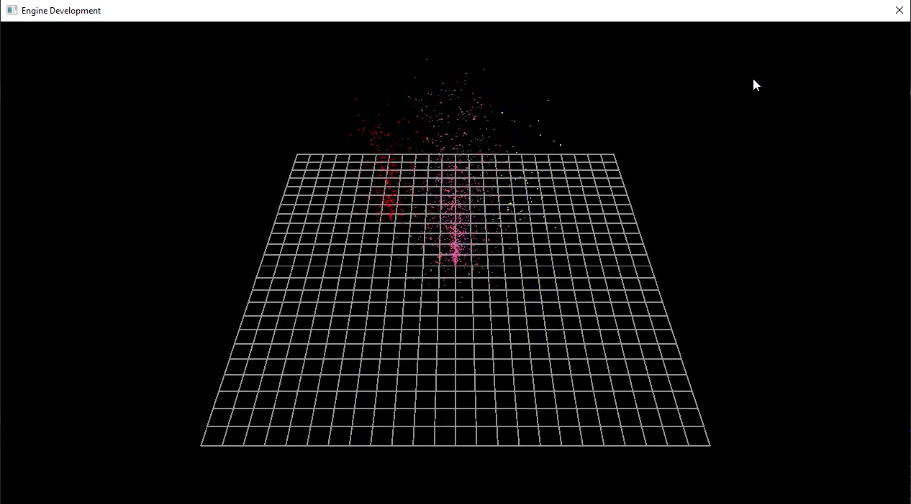

Engine Development Projects
C++ | DirectX 11
List of Contributions:

Particle System with Sorted and Unsorted Pools
Developed a particle system using sorted and unsorted pools, including:
- Implemented a free list allocator for managing particle memory efficiently.
- Created a sorted pool for active particles and an unsorted pool for free particles.
- Designed an emitter system to spawn and update particles with gravity and color interpolation.
Matrix Transformations and Rendering
Developed and integrated matrix transformations for rendering, including:
- Implemented functions for matrix multiplication, inversion, and other transformations.
- Utilized DirectX 11 for rendering 3D objects with dynamic camera controls.
- Created a grid rendering system to visualize transformations and camera movements.